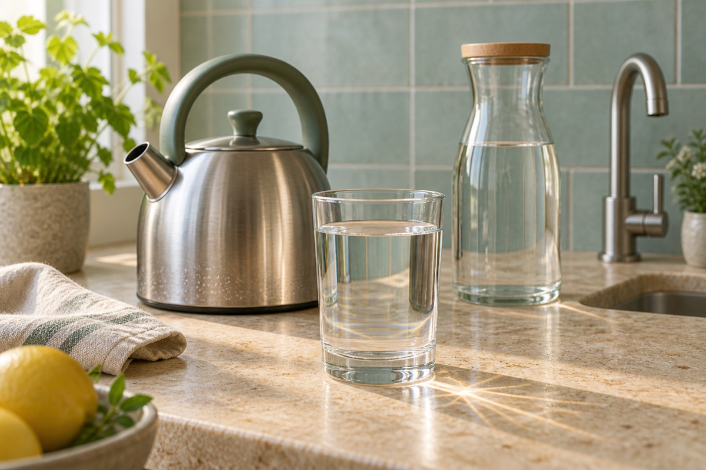

热，让病原体失去本领
合适的高温和时间，能破坏致病细菌、病毒和寄生虫的关键结构，让它们失去感染人的能力。烧开是消毒办法，不是把所有东西都捞走。

这是一张想象的放大图。选择一种成分，看看它为什么会在水里。
成分用符号表示 · 不是显微照片或检测
切换情境，再比较煮沸前后。现实中的判断要看供水信息与当地通知，不能靠这张图。
只在屏幕里看概念变化，不是操作热水；绿色虚线框表示加热后的消毒剂残留未建模。
烧水和倒热水都请大人来做。不要试喝来判断水是否安全。
合适的高温和时间，能破坏致病细菌、病毒和寄生虫的关键结构，让它们失去感染人的能力。烧开是消毒办法，不是把所有东西都捞走。
水里原本溶着的部分钙等矿物成分，加热后可能变成壶壁上的水垢。水垢本身不说明水被病菌污染；没有水垢，也不证明水安全。
了解当地供水和饮水通知。若怀疑化学污染，换用安全水源，联系供水或卫生部门。
水壶、热水和蒸汽都可能烫伤。孩子只在屏幕里做比较，不碰开水。
煮过的水放凉后再喝，用清洁消毒过的有盖容器保存。脏手、脏杯子仍可能把病原体带回来。
合规供水的主体是水，通常含溶解矿物质。采用氯或氯胺消毒的系统，常在配送途中保留受控制的少量消毒剂，帮助抑制病原体。并非所有地区使用同一种工艺；这里的图不代表每户水的实际成分。
水源、净水处理、管网、楼宇储水与末端器具都影响水质。能否直接饮用，须依据当地标准、供水情况与卫生部门建议，不能只看颜色、气味，或把某国的建议直接套用到所有地区。
图中“消毒保护”并不表示要向家里的水加药；本页不提供儿童自行消毒的实验。
作为应急煮沸指导的一个来源，CDC 建议清水持续滚沸 1 分钟；海拔超过 6,500 英尺（约 1,981 米）时持续 3 分钟。各地指导可能不同，实际应遵循当地发布的通知。这里没有倒计时，也不能检验水是否达到处理要求。
煮沸针对微生物风险，不能去除铅等重金属、盐类或多数化学污染物。有化学污染或“勿饮用／勿使用”通知时，不应把煮沸当作补救；按通知使用安全替代水源。消毒也不等于达到实验室无菌状态。
这是定性情境比较，非水质检测、浓度模拟、微生物存活曲线或饮水认证。符号大小和数量不成比例，灰色划线只表示病原体被灭活的概念，不表示残留数量。正常情境没有画病原体，不等于水绝对无菌；图中化学污染只选用煮沸不能解决的一类。
下列资料于 2026-09-12 查阅。数值煮沸建议采用 CDC 的表述；EPA 用于核对化学污染的限制，USGS 用于矿物质与水垢解释。